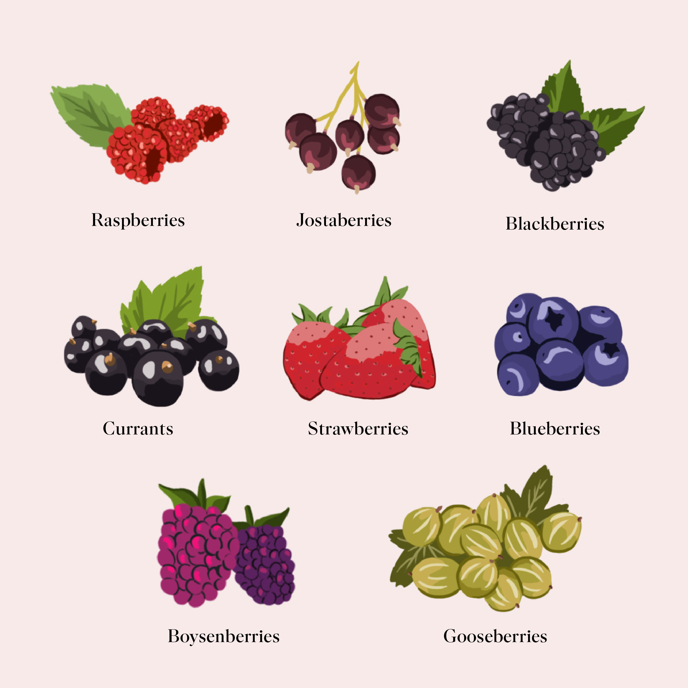
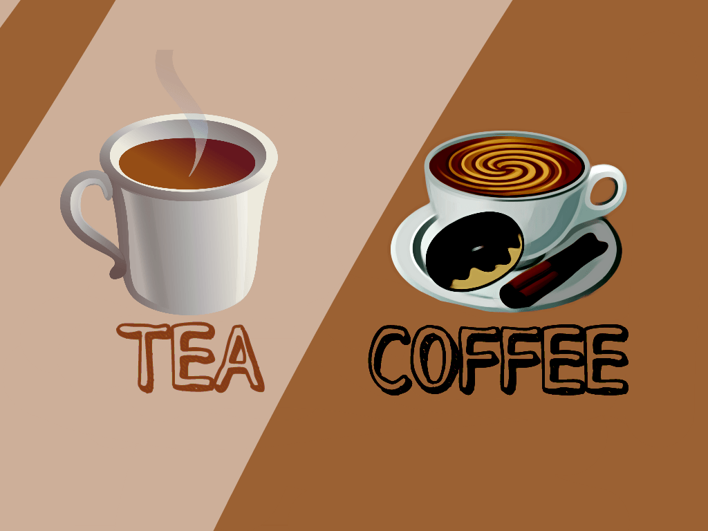
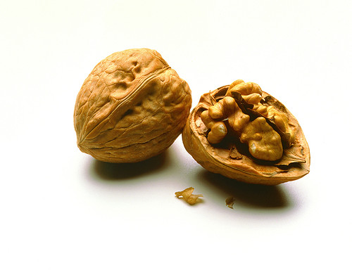

Home Toddlers Teens Adults Olders About
1.Green Veggies: |
Leafy greens such as kale,spinach,collrds and broccoli are rich in brain-healthy nutrients like vitamin K,lutien,folate and beta carotene.Research suggests these plant-based foods may help slow cognitive decline. |
2.Berries: |
Flavonoids,the natural plant pigments that give berries their brilliant hues,also help improve memory reseach shows. |
3.Tea+Coffee: |
Coffee and tea might offer more than just a short term concentration boost.In a recent study,participants with higher caffine constuption scored better tests of mental function. |
4.Walnuts: |
Nuts are excellent source of protien and healthy fats and walnuts in particular might also improve memory according to a study. |